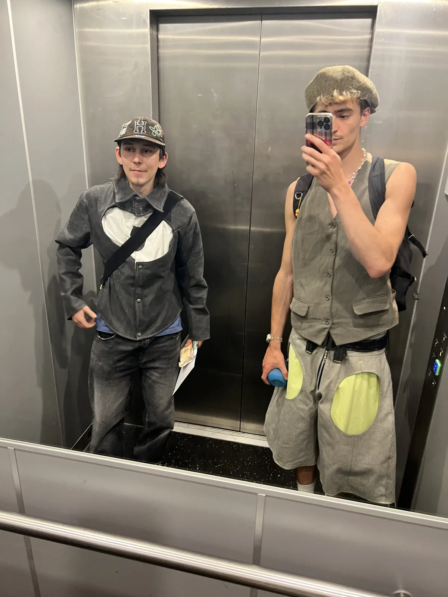

Click to explore in free-flight
W A S D / Z Q S D fly · Space up · Shift down
Mouse: look · aim at a bubble and click · Esc to exit
Or switch back to Orbit mode (Tab) to navigate with the numpad.

We're a small collective of makers, designers building a fashion show for Dutch Design Week 2026 in Eindhoven (Oct 21–27).
Rens and Lele cut, stitch and source the textiles — all second-hand — and film the process along the way.
Seven looks and a handful of accessories, somewhere between technical streetwear and tailoring. We care about positive systems — exchanges between people and things that nourish rather than destroy. The show itself leans closer to a dance: slow movements, a chill song, solos, trios, everyone together.